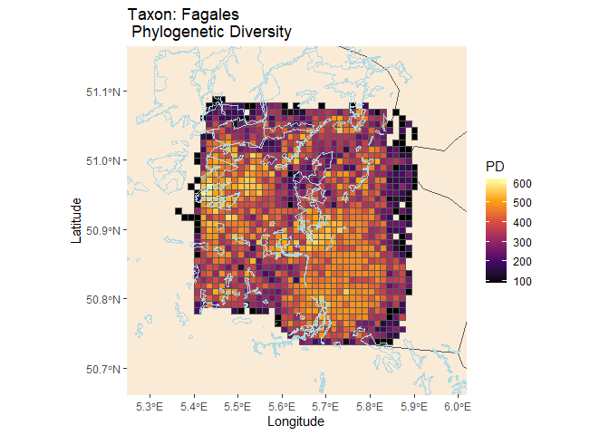
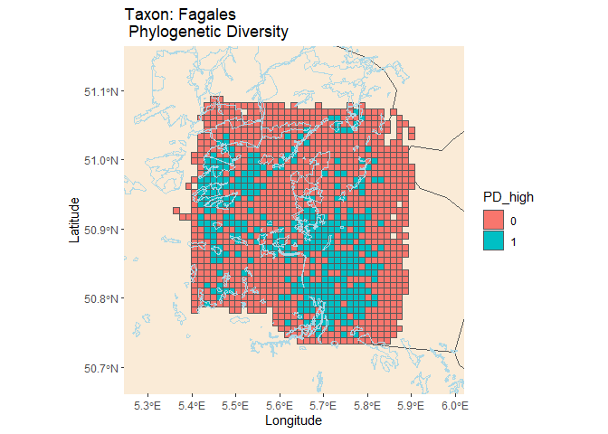

Phylogenetic diversity (PD) is a measure of biodiversity which takes evolution into account. It is calculated as the sum of the lengths of the phylogenetic tree branches representing the minimum tree-spanning path among a group of species. Phylogenetic diversity can be used in conservation planning to maximise a variety of features, meaning we do not aim to conserve specific features, but rather want to boost a diverse range of features. Conserving a variety of features could be particularly useful in light of the changing environmental conditions, as we can only guess which features will be important in the future.
In this package, we provide a workflow to calculate a metric that gives information about how well PD of a certain higher taxonomic group is currently safeguarded by protected areas and a spatial visualisation which can be used to identify potential directions for future expansion of protected areas.
Installation
Install pdindicatoR in R:
install.packages("pdindicatoR", repos = "https://b-cubed-eu.r-universe.dev")You can install the development version from GitHub with:
# install.packages("remotes")
remotes::install_github("b-cubed-eu/pdindicatoR")Example workflow
This example shows a basic workflow for using the functions in the pdindicatoR package to calculate PD from a phylogenetic tree and an occurrence cube with occurrences for a certain higher taxon, produce a gridded map of PD scores with colour gradient scale, and show the overlap with protected areas.
# Load packages
library(pdindicatoR)
library(sf) # working with spatial objects
library(dplyr) # data wranglingReading in data
In order to start the workflow, the user should specify the filepaths to a phylogenetic tree, a species data occurrence cube, and two shapefiles:
1) a grid, which should correspond to the grid used to generate the datacube
2) a polygon shapefile with boundaries of protected areas.
The phylogenetic tree should be in either nexus or newick format. The species occurrence cube must have the same variable names as the example datacube (or the columns should be renamed after loading). For more information on how to obtain species occurrence cubes from GBIF and phylogenetic trees to be used with this package, we refer to the vignette ‘Finding datasets to use with pdindicatoR’.
The following functions can be used to read in datafiles:
tree_path <- "/path/to/mytree.tre"
cube_path <- "/path/to/mycube.csv"
grid_path <- "/path/to/grid.shp"
# Read in newick or nexus format phylogenetic tree
library(ape)
tree <- ape::read.tree(tree_path)
# Read in species occurrence data cube. Use appropriate seperator!
cube <- read.csv(cube_path, stringsAsFactors = FALSE, sep = "\t")
# Read in grid and protected areas shapefile
grid <- sf::st_read(grid_filepath)Loading example data
For this example workflow, we will be using the example data that is included in the pdindicatoR package. The example data can be loaded by using the function retrieve_example_data()
ex_data <- retrieve_example_data()
tree <- ex_data$tree
cube <- ex_data$cube
grid <- ex_data$grid
pa <- ex_data$paInspect tree and cube
We plot the tree and print the first lines of the occurrence cube to confirm they are processed correctly.

head(cube)## year eeacellcode specieskey species establishmentmeans degreeofestablishment pathway occurrences distinctobservers
## 1 2024 1kmE3996N3087 2880539 Quercus rubra NA NA 1 1
## 2 2024 1kmE3997N3088 3054357 Juglans nigra NA NA 2 1
## 3 2024 1kmE3997N3090 3054368 Juglans regia NA NA 1 1
## 4 2024 1kmE3997N3100 2880539 Quercus rubra NA NA 1 1
## 5 2024 1kmE3997N3104 5333294 Castanea sativa NA NA 1 1
## 6 2024 1kmE3997N3104 8313153 Quercus palustris NA NA 1 1Matching species in phylogenetic tree and datacube
The leaf labels of a phylogenetic tree downloaded from the OTL database are specified as either species names or OTL id’s (ott_id). We can use the function taxonmatch() to retrieve the corresponding GBIF id’s.
matched <- taxonmatch(tree)
head(matched)## search_string unique_name approximate_match score ott_id is_synonym flags number_matches gbif_id orig_tiplabel
## 1 alfaroa costaricensis Alfaroa costaricensis FALSE 1 199041 FALSE 1 7310550 Alfaroa costaricensis
## 2 alfaroa guanacastensis Alfaroa guanacastensis FALSE 1 199043 FALSE 2 NA Alfaroa guanacastensis
## 3 alfaroa manningii Alfaroa manningii FALSE 1 199049 FALSE 1 4205554 Alfaroa manningii
## 4 alfaroa williamsii Alfaroa williamsii FALSE 1 1064109 FALSE 1 7310534 Alfaroa williamsii
## 5 alfaropsis Alfaropsis FALSE 1 200433 FALSE barren 2 NA Alfaropsis
## 6 allocasuarina acutivalvis Allocasuarina acutivalvis FALSE 1 769753 FALSE 1 2891875 Allocasuarina acutivalvisCarefully evaluate the table with matches to ensure that matching scores are acceptable and that most species have a corresponding gbif_id. Species that cannot be reliable matched or that don’t have an associated gbif_id, can not contribute to the PD calculation and should be removed.
Then, we can use the function append_ott_id() to append the ott_id’s as a new variable to the provided datacube, by joining on gbif_id.
mcube <- append_ott_id(tree, cube, matched_nona)
head(mcube)## year eeacellcode specieskey species establishmentmeans degreeofestablishment pathway occurrences distinctobservers ott_id unique_name orig_tiplabel
## 1 2024 1kmE3996N3087 2880539 Quercus rubra NA NA 1 1 791115 Quercus rubra Quercus rubra
## 2 2024 1kmE3997N3088 3054357 Juglans nigra NA NA 2 1 1072887 Juglans nigra Juglans nigra
## 3 2024 1kmE3997N3090 3054368 Juglans regia NA NA 1 1 138717 Juglans regia Juglans regia
## 4 2024 1kmE3997N3100 2880539 Quercus rubra NA NA 1 1 791115 Quercus rubra Quercus rubra
## 5 2024 1kmE3997N3104 5333294 Castanea sativa NA NA 1 1 1028994 Castanea sativa Castanea sativa
## 6 2024 1kmE3997N3104 8313153 Quercus palustris NA NA 1 1 538292 Quercus palustris Quercus palustrisWhen species in the datacube are not included in the provided phylogenetic tree, the ott_id variable will be NA. We can use the function check_completeness() to see how complete the provided phylogenetic tree is.
check_completeness(mcube)## The following species are not part of the provided phylogenetic tree:
## specieskey species
## 1 9148577 Alnus incana
## 2 NA
## 3 2880130 Quercus petraea
## 4 2880580 Quercus cerris
## 5 8288647 Pterocarya fraxinifolia
## 6 2879292 Quercus rosacea
## 7 2879520 Quercus conferta
## 8 2876571 Alnus pubescens
## 9 7797155 Alnus hirsuta
## 10 2880652 Quercus phellosPlease note that occurrence records for species that are not part of the provided phylogenetic tree will need to be removed. In case this number is large, please consider searching for a more complete phylogenetic tree that covers all your species!
Calculate Phylogenetic Diversity for each grid cell
We can used the function get_pd_cube() to calculate the PD values per gridcell. This function first creates a new aggregated cube, with a list of observed species for each grid cell. The optional argument timegroup can be used to indicate a time interval for which the PD metrics should be calculated, e.g. timegroup = 5 calculates PD for all occurrences observed within a timespan of 5 years and produces a separate map and indicator for each period. If no timegroup argument is specified, all occurrences in the dataset will be aggregated over time. The argument metric can be used to specify which PD metric needs to be calculated. The PD values will be appended to the datacube as a new column ‘PD’.
pd_cube <- get_pd_cube(mcube, tree, metric = "faith")Visualize PD on a map & calculate indicator
Finally we read in the EEA Grid shapefiles and merge them to the occurrence cube by joining on the eeaCellCode field. The PD cube can then be plotted and overlaid with a polygon layer depicting the boundaries of WDPA protected areas.
Plot PD map
The function generate_map_and_indicator() can be used to generate a map visualizing phylogenetic diversity covering the geographic area that is used to generate the occurrence cube.If more detailed maps are desired, the optional argument bbox_custom can be used to delineate the bounding box. Coordinates for the desired geographic area can be determined using https://epsg.io/ and selecting the CRS of the used grid.
pdindicator <- generate_map_and_indicator(pd_cube, grid, "Fagales")
pdindicator
# Optionally specify a custom bounding box
# bbox_custom <- c(xmin,xmax,ymin,ymax)
# pdmap <- generate_map_and_indicator(pd_cube, grid, "Musteloidea", bbox_custom)If the optional parameter cutoff is specified, than this value is used to classify cells as high PD cells if their PD exceeds this threshold value. An indicator value is then calculated as the percentage of high PD cell centerpoints that fall within the boundaries of protected areas. The result is stored as a list, with two maps in the first element (PD map and high/low PD map) and the indicator value as the second element.
pdindicator <- generate_map_and_indicator(
pd_cube,
grid,
"Fagales",
cutoff = 450)
plots <- pdindicator[[1]]
indicators <- pdindicator[[2]]
print(plots)
